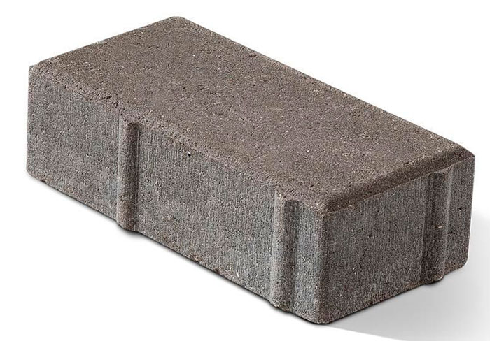

В ландшафтном дизайне для благоустройства территории, мощения садово-парковых, пешеходных дорожек используются разные виды тротуарной плитки, многообразие этого строительного материала очень большое, что часто затрудняет выбор.
Получается методом прессования с вибрационной утрамбовкой смеси бетона с водой. Вибротрамбовка полностью удаляет воздушные пузырьки из раствора, уплотняя и повышая прочность застывшей массы. Получается плотный продукт, выдерживающий большие нагрузки, поэтому он подходит для мощения парковочных мест, может укладываться в северных регионах.
Это более простая технология: раствор заливается в формы, установленные на вибрирующей поверхности. Вибролитая бетонная плитка выдерживает меньшие нагрузки, чем предыдущий вариант. Она подходит для создания пешеходных дорожек, обустройства придомовой территории частных домов.
Раствор прессуется под большим давлением на высокотехнологичных гидропрессах. В результате все компоненты склеиваются между собой (похоже на холодную сварку), получается сверхпрочный плиточный материал. При производстве данной плитки используется гидропресс.
Клинкерные разновидности тротуарной плитки наиболее твердые из всех известных на рынке. Они изготавливаются из клинкера – керамики из особых сортов глины, высокая прочность которой достигается методом обжига при температуре выше 1200 градусов C. Это достаточно дорогой материал. Благородный вид, ударостойкость, низкое водопоглощение – основные достоинства продукта. Клинкер обладает антискользящим эффектом, обеспечивающим прочное сцепление обуви с поверхностью даже во время дождя.
Резиновое тротуарное покрытие пластичное, дешевое, безопасное в пользовании. Оно подойдет для оформления детских площадок, участков, где люди занимаются физкультурой и спортом. Продукция делается из резиновой крошки с фракцией от 0,6 до 3 мм. По технологии прессования она делится на горячепресованную и холоднопресованную.
Другое название полимерно-песчаной тротуарной плитки – пластиковая. Она производится из песка с добавлением клейких полимеров и красителей, без использования цемента.
Гранитная брусчатка делается из натурального камня. Стандартные размеры составляют 100*100*50 мм, вес природного материала немалый – около 100 кг/ кв. м. Тяжеловесный, прочный, привлекательный камень позволяет мостить придомовые или общественные участки на века. Кроме того, в отличие от других моделей тротуарного покрытия гранитное можно снимать с грунта без опасений его повреждения, а затем укладывать заново.
Это прямоугольный параллелепипед, грани которого образованы методом скола цельного камня, поэтому они имеют рваную структуру. В результате мощения дорожки колотым гранитом она приобретает естественный вид: швы между камнем широкие, а поверхность обладает естественными неровностями. Колотая плиточная продукция подойдет для облагораживания домов, оформленных в исторических стилях или кантри.
У этих моделей боковые грани спилены, поэтому они гладкие, а поверхность неровная колотая. Швы у такой композиции тонкие, так как отдельные элементы укладываются вплотную, при этом сама дорожка получается с естественными неровностями природного камня.
Грани полнопиленного гранита спиливаются со всех сторон, поэтому он не имеет рваных плоскостей с естественным рельефом. Этот гладкий материал дает на участке геометрически идеальные по форме композиции. Стоит полнопиленная брусчатка дороже продукта с колотыми гранями.
Ее верхняя поверхность полируется до блеска. В результате обработки получается прямоугольный параллелепипед идеальной формы с глянцевым полированным блеском на верхней плоскости.